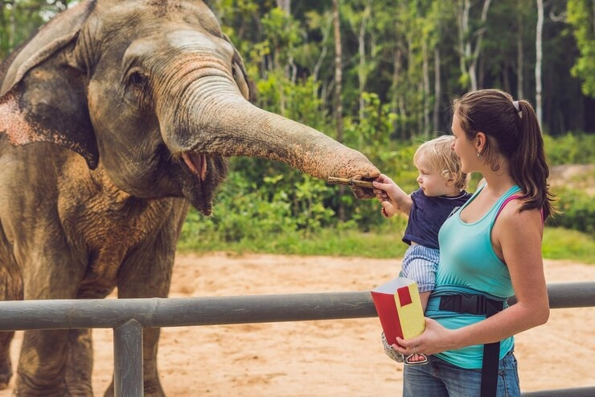

Музей керамики
В музее экспонирует коллекция, насчитывающая около 1000 экспонатов. На витринах выставлены предметы народной керамики, восточные сосуды, куклы и игрушки, отражающие многообразие используемых в народном искусстве материалов, техник его обработки, формования, декорирования.
Экспонаты демонстрируют своеобразие форм и способов их украшения в различных регионах и центрах России и Востока – от небольших, локального значения очагов ремесла до всемирно известных народных художественных промыслов, таких как Гжель, Скопин, Дымка и экспонатов заводов бывшего Советского Союза.
В музее выставляется часть коллекции, принадлежавшая легендарной художнице, жившей в Ярославле, Ариадне Леонидовне Соколовой. Нашим мемориалом, посвящённым Соколовой А.Л., мы отдаем дань этой замечательной женщине, неутомимому борцу и творцу прекрасного.
В коллекции собраны куклы, картины, афиши, каталоги выставок, книги стихов, личные вещи художницы, коллекция Дагестанкой керамики (сосуды, глиняные фигурки-амулеты с изображениями людей, животных, птиц). Эти игрушки - языческие символы далёких времён.
Все эти предметы, хранившиеся в «Доме муз», были переданы самой А. Соколовой, выкуплены или любезно переданы родственниками в наш музей.
В галереи керамики представлена коллекция восточных сосудов и керамики, артефактов из Израиля, дымковской игрушки, замечательные образцы фарфоровых заводов СССР. У нас Вы можете познакомиться и полюбоваться вышитыми картинами и картинами вышитыми бисером.
Виртуальный музей
Немного об экспонатах